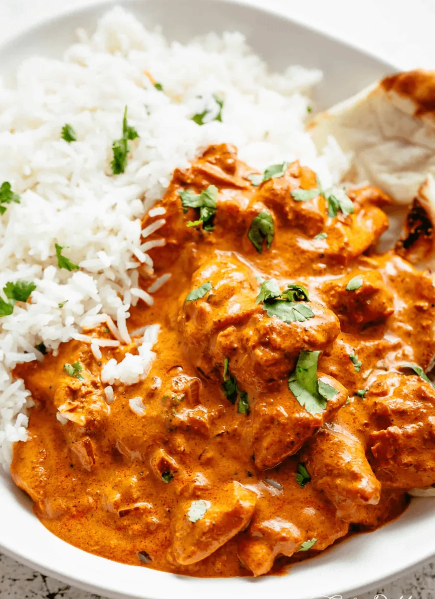

Chicken Tikka Masala with Naan Bread
A traditional Indian dish made up of chicken that's been marinated in yogurt, served with rice.
INGREDIENTS
Tap items to check offChicken Marinade
Naan
Sauce
INSTRUCTIONS
Tap a step to mark complete1. In a bowl, combine chicken with all of the ingredients for the chicken marinade; let marinate for 10 minutes to an hour (or overnight if time allows).
2. Heat oil in a large skillet or pot over medium-high heat. When sizzling, add chicken pieces in batches of two or three, making sure not to crowd the pan. Fry until browned for only 3 minutes on each side. Set aside and keep warm. (You will finish cooking the chicken in the sauce.)
3. Melt the butter in the same pan. Fry the onions until soft (about 3 minutes) while scraping up any browned bits stuck on the bottom of the pan.
4. Add garlic and ginger and sauté for 1 minute until fragrant, then add garam masala, cumin, turmeric and coriander. Fry for about 20 seconds until fragrant, while stirring occasionally.
5. Pour in the tomato puree, chili powders and salt. Let simmer for about 10-15 minutes, stirring occasionally until sauce thickens and becomes a deep brown red colour.
6. Stir the cream and sugar through the sauce. Add the chicken and its juices back into the pan and cook for an additional 8-10 minutes until chicken is cooked through and the sauce is thick and bubbling. Pour in the water to thin out the sauce, if needed.
7. Garnish with cilantro (coriander) and serve with hot garlic butter rice and fresh homemade Naan bread!
1. Stir together warm water and honey until the honey has dissolved.
2. Add the water mixture to the bowl of a stand mixer with the dough attachment, and sprinkle the yeast on top of the water. Give the yeast a quick stir to mix it in with the water. Then let it sit for 5-10 minute until the yeast is foamy.
3. Turn the mixer onto low speed, and add gradually flour, yogurt, salt, baking powder, and egg. Increase speed to medium-low, and continue mixing the dough for 2-3 minutes, or until the dough is smooth. (The dough will still be slightly sticky, but should form into a ball that pulls away from the sides of the mixing bowl.)
4. Remove dough from the mixing bowl, and use your hands to shape it into a ball. Grease the mixing bowl (or a separate bowl) with olive oil or cooking spray, then place the dough ball back in the bowl and cover it with a damp towel. Place in a warm location (I set mine by the sunny window) and let it rise for 1 hour until the dough has nearly doubled in size.
5. Meanwhile, heat the butter in a small saute pan over medium heat until melted. Add garlic and cook for 1-2 minutes until fragrant. Then remove butter from heat, strain out and discard the garlic, leaving the infused melted butter behind. Set aside.
6. Once the dough is ready, transfer it to a floured work surface. Then cut the dough into 8 separate pieces. Roll each into a ball with your hands, then place on the floured surface and use a rolling pin to roll out the dough into a large circle (or oval, or whatever shape it takes) until the dough is a little less than 1/4-inch thick. Brush dough lightly with the garlic-infused butter on both sides.
7. Heat a large cast-iron skillet or heavy saute pan over medium-high heat. Add a piece of the rolled-out dough to the pan and cook for 1 minute, or until the dough begins to bubble and the bottom turns lightly golden. Flip the dough and cook on the second side for 30-60 seconds, or until the bottom is golden. Then transfer the naan to a separate plate, and cover with a towel. Repeat with remaining dough until all of the naan pieces are cooked.
8. Keep the naan covered with the towel until ready to serve, so that it doesn’t dry out. Serve sprinkled with fresh cilantro, if desired.